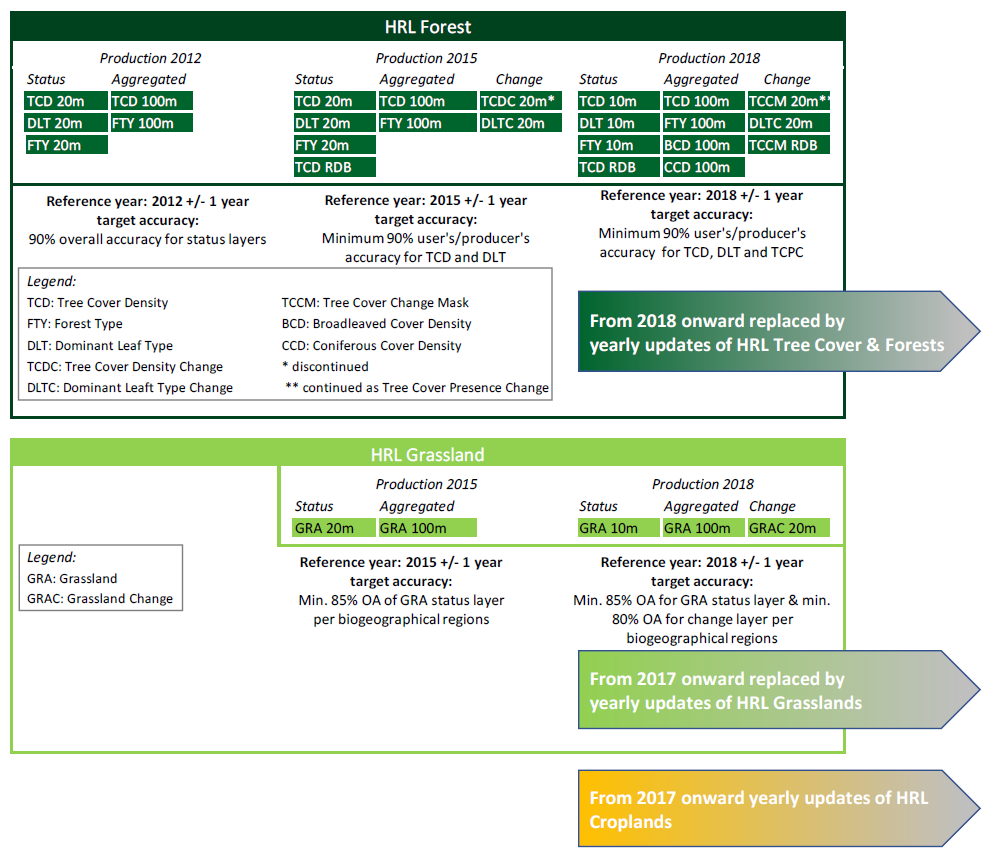
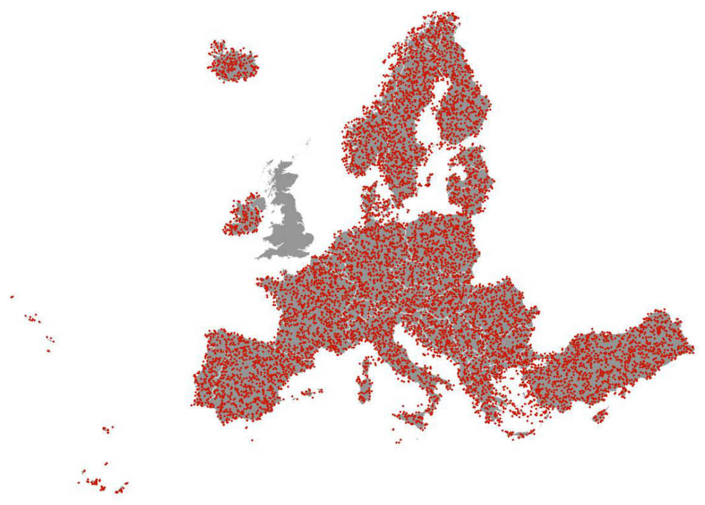
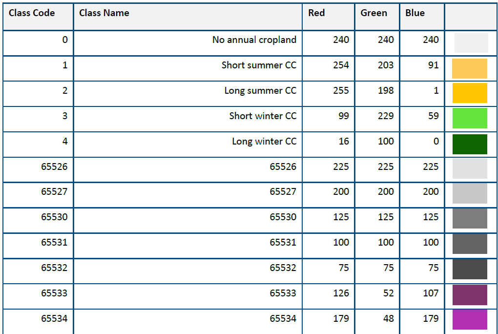
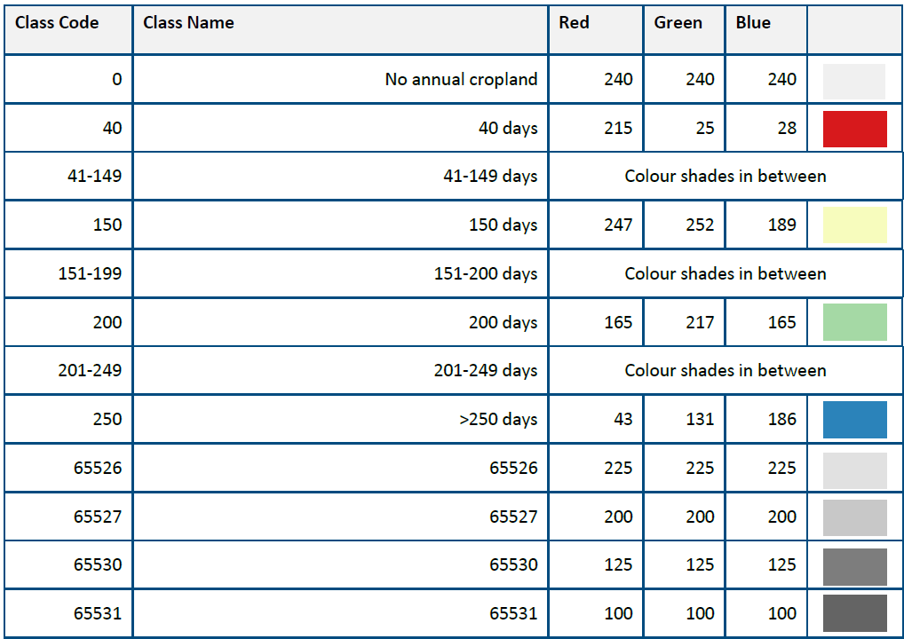

High Resolution Layer Croplands - Product User Manual
Copernicus Land Monitoring Service
Crop Types layer, Cropping Patterns, Base Vegetation Layer, Sentinel-2 imagery, Bare Soil duration, Main Crop Emergence, Fallow Land Presence, Accuracy Assessment, LUCAS Survey, Cloud-Optimized GeoTIFFs
Contact:
European Environment Agency (EEA)
Kongens Nytorv 6
1050 Copenhagen K
Denmark
https://land.copernicus.eu/
1 Executive summary
Copernicus is the European Union’s Earth Observation Programme. It offers information services based on satellite Earth observation and in situ (non-space) data. These information services are freely and openly accessible to its users through six thematic Copernicus services (Atmosphere Monitoring, Marine Environment Monitoring, Land Monitoring, Climate Change, Emergency Management and Security).
The Copernicus Land Monitoring Service (CLMS) provides geographical information on land cover and its changes, land use, vegetation state, water cycle and earth surface energy variables to a broad range of users in Europe and across the world in the field of environmental terrestrial applications.
CLMS is jointly implemented by the European Environment Agency (EEA) and the European Commission’s DG Joint Research Centre (JRC).
The High Resolution Layer (HRL) Vegetated land cover characteristics are a set of harmonised yearly maps dedicated to the thematic themes Tree Cover & Forests, Grasslands and Croplands. These include a rich suite of raster products mapping the yearly status of those land cover types at a spatial resolution of 10 metres and change layers at 3-yearly interval and 20-metre resolution. HRL vegetated land cover characteristics extends the time-series of the existing HRL’s Tree Cover & Forests and Grasslands and complements the CLMS portfolio with new layer dedicated to the mapping of crop types and agricultural practices such as mowing, harvest and cover crops.
2 Background of the document
2.1 Scope
This Product User Manual is the primary document that users are recommended to read before using the product. It provides a description of the product characteristics, production methodologies and workflows, and information about the product quality of the annual provision of HRL Croplands. Furthermore, it gives information on the terms of use and product technical support. More detailed information on the methodologies and processing workflows that were used to produce the products can be found in the Algorithm Theoretical Baseline Document (ATBD) [7].
2.2 Content and structure
In more detail, the document is structured as follows:
Chapter 3 provides an overview of the lineage of the products in relation to previous productions;
Chapter 4 contains a review of user requirements;
Chapter 5 provides on overview of what is included in the High Resolution Layers vegetated land cover characteristics and how the comprised products relate to each other;
Chapter 6 presents potential application areas and example use cases;
Chapter 7 provides a description of the products including the nomenclature and class definitions, file naming, spatial resolution format(s), etc.;
Chapter 8 summarizes the quality assessment, validation procedure and the results;
Chapter 9 provides information about product access and use conditions as well as the technical product support.
3 Lineage of HRL Tree Cover and Forests, Grasslands, and Croplands
High Resolution Layers (HRL) on Tree Cover & Forests had already been established in the Copernicus Land Monitoring Service (CLMS) portfolio since the reference years 2012 producing initially a Dominant Leaf Type (DLT), a Tree Cover Density (TCD), and a Forest Type (FTY) map at a spatial resolution of 20 metres (Figure 3-1). Change layers and reference datasets were included with the reference year 2015. At the same time the accuracy targets were raised towards at least 90% user’s and producer’s accuracy for the DLT and TCD status layers. A further important step followed with the first production for the reference years 2018 (further referred to as Historic HRL Forest 2018) where the spatial resolution of the status layers was raised to 10 metres, the implementation of the change layers was partially reconsidered and target accuracies of 90% user’s and producer’s accuracy for the change layers were defined. In addition, new aggregated layers depicting the density of coniferous and broadleaved tree cover were introduced. With the HRL Tree Cover & Forests starting from the reference year 2018 the product specifications have been kept largely in line with the definitions used for the Historic HRL Forest 2018 [8] whereas major changes concerned in particular the move to a yearly update cycle for the status layers and changes to some confidence layers (not shown in Figure 3-1). The new HRL Tree Cover & Forests therefore replace and extend the Historic HRL Forest 2018. This does not include an update of the change layer 2015 – 2018; the new status layers for 2018 are therefore not consistent with the original change layers 2015 – 2018.
HRL’s on Grasslands had already been established in the Copernicus Land Monitoring Service (CLMS) portfolio since the reference years 2015 initially producing a status layer on the absence / presence of grassland (Figure 3-1) with a target Overall Accuracy of 85%. With the reference year 2018, the spatial resolution of the status layers was increased to 10 metres and a change layer with a target Overall Accuracy of 80% was introduced. With the HRL Grasslands starting from the reference year 2017, the product specifications have been largely maintained to ensure consistency with the definitions used for the Historic HRL Grassland 2018 [9]. In particular, the HRL Grassland (GRA) layer has been transitioned to an annual update cycle for the status layers, complemented by an additional yearly Herbaceous Cover layer that also includes temporary grassland in the reference year. A further methodological enhancement concerns the removal of the Minimum Mapping Unit (MMU) from both the PLOUGH and GRA layer starting from 2022. This adjustment was introduced to improve the current consistency between the GRA, HER, and PLOUGH layers and to eliminate artificial gains and losses resulting from MMU-induced filtering. While this change enhances the internal coherence and spatial detail of the current HRL Grassland layers, it may lead to minor differences when compared to historic layers (years before 2022) where MMU thresholds were still applied. Consequently, users should be aware that actual small-area grassland changes may be partly mixed with technical changes resulting from the removal of the MMU. New layers on the count and timing of Grassland Mowing (Minimum Mapping Unit of 0.25 ha) and changes to some confidence layers (not shown in detail in Figure 3-1) are introduced. The new HRL Grasslands therefore replaces and extends the Historic HRL Grassland 2018. This does not include an update of the change layer 2015 – 2018; the new status layers for 2018 are therefore not consistent with the original change layers 2015 – 2018.
The HRL Croplands is a new set of layers dedicated to agriculture and comprises several yearly layers mapping crop types (10-metre spatial resolution) and agricultural practices such as harvest, fallow land and secondary crops (10-metre spatial resolution, Minimum Mapping Unit of 0.25 ha).

4 Review of User Requirements
In the frame of the Horizon 2020 (H2020) project ECoLaSS a survey [5] of key stakeholders has been performed in order to evaluate the user requirements towards the evolution of existing and future Copernicus products. This survey made also use of the results from the Nextspace User Study [6] and revealed that HRL users like European institutions, service industry, research and academia, national agencies, regional administrations, NGOs or private users would in general appreciate:
High thematic quality/meaningful and application-oriented product definitions;
Sufficient spatial and timely resolution concerning both, status layer and change layer;
Short update cycles;
Change monitoring;
Free and open access;
High technical quality;
Standardized and comparable nomenclature;
Transparent and scientific workflows and state-of-the-art methodology;
Detailed documentation of these workflow and the respective methodology;
Consistency of the Pan-European products enabling synergistic use of all products;
Streamlining the pan-European product with global ones;
Availability of historic data and compatibility of time series;
Open access to the original Copernicus Sentinel data;
Sophisticated product presentation and visualisation possibilities in an online viewer on the Copernicus platform;
IPCC -compliant land-use categories.
While many of these requirements had already been satisfied with previous HRL reference years some could only be implemented within the current update:
A long-standing thematic gap in the European CLMS portfolio concerning the monitoring of agriculture has been addressed though new products on crop types and agricultural activities. This also improves the separation between grassland and cropland and the IPCC conformity;
Yearly update cycle for status layer;
Grassland use intensity (or the dynamics of intensification/ extensification) is partially addressed through a new product on Grassland mowing.
Further requirements that remain to be considered for future updates are for example:
More fine-grained differentiation among species-rich (extensively used) and separation from species-poor (intensively used) and managed grassland;
Tree-species compositions and shifts between extensive and intensive management;
Increased timeliness of availability of the products: The mid-term goal is a product provision at latest 12 months after the end of the reference year.
5 Product structure - What are the High Resolution Layers?
The High Resolution Layers (HRL) vegetated land cover characteristics portfolio consists of Tree Cover & Forests, Grasslands and Croplands products (Figure 5-1), which together cover most of what is defined as the Biotic component of the EAGLE Land Cover Components1. More specifically, the mapping is focused on surfaces with a vegetation cover above 30%; an exception to this is tree cover where the objective is to map tree cover with a continuous range of 1-100% Tree Cover Density (TDC), i.e. also below 30%, as far as detectable from 10-metre resolution satellite imagery. This definition is also in line with the Sparsely Vegetated class in the Corine Land Cover (CLC)+ Backbone Raster2 and considers that detection / classification of vegetation below this threshold is typically more error-prone. The definition also aims at largely avoiding overlaps with the non-vegetated land cover characteristics such as HRL Imperviousness, which is focused on areas with less than 10% vegetation cover during any time of the year, for a reference period of 3 year.
Some overlaps between the three product groups are allowed by definition, for example areas with tree crops (i.e. olive, fruit and nut trees) which are included in both the Tree Cover & Forests and the Croplands products. Furthermore, specific vegetations types are not included in the HRLVLCC portfolio; this concerns areas dominated by natural shrubs (i.e. shrubs that are not under agricultural use) and associations of lichens and mosses.

Given several interdependencies and potential overlaps among the Grasslands, Croplands and Tree Cover & Forests products, the overall workflow starts with the classification of Base Vegetation Layer (BVL). A high-level description is provided for the overall workflow in Figure 5-2. The yearly BVL classification initially targets the separation of five basic land cover classes being:
herbaceous vegetation;
cropland;
tree cover;
- tree crops (i.e. nomenclature overlap between broadleaved tree cover and permanent crops in the Croplands product);
- background class (including bare and sparsely vegetated areas and non-agricultural shrubs);
In a subsequent post-processing step two further classes are derived to delineate the:
potential overlap herbaceous – cropland (i.e. pixels which are classified as cropland and herbaceous at least once in the time-series);
The second derived class is derived from the intersection of all areas classified as tree cover and a preliminary version of the Tree Cover Density to delineate areas with low Tree Cover Density and hence allowed overlaps of herbaceous and tree cover.
The derived yearly BVL is considered for the downstream productions of Grasslands, Croplands and Tree Cover & Forests products as follows:
For the production of the Grasslands layers: all areas classified as herbaceous, overlap herbaceous – tree cover, or overlap herbaceous – Cropland are considered as the potential maximum extent for the Herbaceous Cover (HER) layer. In addition, the BVL classification probabilities for the herbaceous class are used as the main input for the derivation of the HER layer.
For the Croplands layers: the areas delineated as cropland, overlap herbaceous –cropland, or Tree Crops are considered as the maximum extent for the CTY classification and further refinement.
For the Tree Cover & Forests layers: the areas classified as tree cover, overlap herbaceous – tree cover, tree crops and the respective probabilities are used directly to derive the respective change layers and yearly DLT and TCD status layers.
Within the areas identified as overlap herbaceous – cropland, a further harmonization step is carried out downstream. To this end the CTY classification initially includes a class for fodder crops which are transferred to the HER layer if occurring in the designated overlap class.

6 Product application areas and examples of use cases
The HRL Tree Cover & Forests, Grasslands and Croplands set of products is designed for use by a broad user community as basis for environmental and regional analysis and for supporting political decision-making, such as the Common Agricultural Policy (CAP), LULUCF (Land Use, Land Use Change and Forestry) regulation, the Nature Restoration Regulation (NRR), or the proposed European Forest Monitoring Law (FML). With the new products the EEA will ensure continuity and further densification of the well-established HRL Tree Cover & Forests and Grasslands product time series. Those include a rich suite of raster products at a 3-yearly interval mapping the status of those land cover types with a spatial resolution of 10-metre and change layers at 20-metre spatial resolution.
As an example, the following sections provide short information on (potential) use cases at national level, for which the Copernicus HRL Croplands product represent a fundamental input.
6.1 Use case: C3/C4 crops specific parametrization for biomass monitoring.
The HRL Crop Types (CTY) layer offers comprehensive information on various crop types, allowing for further differentiation between C3 and C4 crops (if class not mixed-up). Maize, being the most common C4 crop cultivated in Europe could be easily derived from this dataset. By providing detailed information on crop types and their specific locations, the CTY layer enables the use of tailored parameters for biomass estimation at C3/C4 crop locations on an annual basis. This information is particularly relevant for on-going work within the Evoland3 project, where the enhancement of biomass mapping for both crop and grassland areas is envisaged. In this respect, the reliability of the biomass mapping could benefit from the availability of this detailed crop type information. Moreover, the distinction between C3 and C4 crops is useful for better estimating autotrophic respiration, which in turn allows for more accurate conversions of gross primary productivity to net primary productivity. Given that C3 and C4 crops have distinct photosynthetic pathways and respiration rates, this differentiation supports the use of more precise parameters in productivity models, contributing to enhanced biomass mapping across crop landscapes.
6.2 Use case: Land cover specific monitoring
Detailed and dynamic information on the state of the land as provided by the HRL Croplands layers allows to analyse regional trends in the area occupied by these land covers, which could be relevant information for authorities and policy makers. Furthermore, applications which require information on the land cover status can benefit from the HRL Croplands. For example, in case of biomass mapping often land cover specific parametrization is applied. Using HRL Croplands, allows to do this in a much more detailed and dynamic way. In case of the Evoland project, it is intended to use these layers to apply specific parametrization over crop and grassland locations.
7 Product description
The HRL Croplands layers are generally provided in 100km Lambert Azimuthal Equal Area (LAEA) projection tiles as shown in Figure 7-1. The five French Oversea Territories are provided in UTM with the layout of the respective territory. The layers are available as Cloud-Optimized GeoTIFFs (COG) per reference year and 100km LAEA tile aligned with the EEA reference grid. Each raster file is accompanied by a Persistent Auxiliary Metadata (PAM) XML and an INSPIRE XML.

The HRL Croplands information aims at filling the data gap needed for detailed agricultural monitoring and enables repeatable and harmonised continental scale assessments within the CLMS portfolio. The HRL Croplands layers entail the mapping the extent of croplands and crop types, delineation of parcel-complexes, mapping agricultural practices on large scale and with wall-to-wall coverage and high spatial details.

The primary layer is the yearly Crop Types (CTY) layer at 10 metre, which maps the specific crop grown in the main growing season for all pixels identified as arable or permanent crops by the BVL. Maximum uniformity, comparability, and interpretability of the final product is guaranteed across different regions in Europe by focusing on the main growing season. Besides the CTY layer a supportive Crop Types Confidence Layer (CTYCL) layer is provided to match the CTY layer. CTYCL indicates the degree of confidence of the provided crop type label. The probability value from the winning class as determined by the model is taken as the confidence level.
Several further status HRL Cropping Patterns (CP) layers, covering 5 thematic domains, give information on the agricultural practices within the classified cropland area for the following domains:
Main Crops;
Bare Soil;
Secondary Crops;
Fallow Land;
Cropping Seasons;
All the CP layers are only applied over annual arable land, excluding permanent crops. Permanent crops do not have specific seasonal cycles, which is the primary focus of the cropping pattern layers. The workflow used to define the different agricultural practices is applied at field level scale, to ensure homogeneity in the seasonal signal and reduce signal noise. Afterwards, all the different layers are rasterized and aligned on the same spatial grid as the CTY layer. Therefore, only for those locations where initially a field could be delineated and where it coincides with a classified annual cropland, the Cropping Pattern layers are generated (excluding crop rotation layer, see last paragraph of section). Since the MMU is applied to the originally delineated parcel geometry used for defining CP information, further alignment with annual cropland may result in smaller spatial patterns due to the clipping of the original field boundaries. However, the CP information itself remains based on an MMU of at least 0.25 ha, as it is still derived from the original parcel geometry.
The Main Crops (MC) layers focus on the characteristics of the main growing season which usually takes place during (part of) the summer season. These layers provide information on the emergence (CPMCE) and harvest (CPMCH) of the main growing season, as well as the duration of the season (CPMCD). Each of these layers include a Confidence Layer (CL) that indicates the level of uncertainty in days. Information on the characteristics of the growing season and its variations over time give valuable information on how growing seasons are impacted by (extreme) weather conditions and climate change at regional and national levels.
The Bare Soil (BS) group of layers include information on the duration of the bare soil period. Presence of a period of Bare Soil Before (CPBSB) the emergence of the main crop season and Bare Soil After (CPBSA) the harvest of the main crop season are evaluated. Both layers also feature a CL that indicates the level of uncertainty in the duration of the bare soil period in days. This uncertainty is based on the uncertainty of the emergence and/or harvest events that define the bare soil period. The bare soil period is only defined for the duration within the reference year. Therefore, emergence events occurring after the calendar year that marks the end of the bare soil period following the main season will not be considered in the uncertainty calculation. Similarly, for the bare soil period before the main season, if the preceding harvest event took place in the previous calendar year, it will not be included in the uncertainty calculation. Information of bare soil periods are relevant for policy makers to assess the susceptibility of soils to leaching and erosion.
The Secondary Crops (SC) group of layers provides information on agricultural parcels where an off-season secondary growing season occurs. Typically, this secondary season involves planting a cover crop in the field. Secondary season presence in only evaluated if a main season is detected. The secondary season is categorized into four Secondary Crop Types (CPSCT) based on the emergence date and length of the season: short/long summer and short/long winter secondary seasons. In addition, to this classification, information on the Secondary Crop Emergence (CPSCE) and Secondary Crop Duration (CPSCD) of the season is included. Similarly, as for the Main Crops (MC) layer, uncertainty information is provided for both the duration and emergence of the secondary crops. The SC layers offer valuable information for assessing policy implementation to prevent soil degradation and monitoring cropping changes during off-season over time at regional and national level.
The Fallow Land (FL) layers give information on Fallow Land Presence (CPFLP) and Fallow Land Duration (CPFLD). Fallow land presence is defined as agricultural land where, temporarily, no agricultural activity takes place. Fallow land duration indicates the number of days a parcel is left fallow for the five-year period i.e., 2017-2021. Both the FLP layer and the FLD layer have an accompanying Confidence Layer (CL).
Finally, the Cropping Seasons layers provide information on the number of detected growing seasons in the Cropping Seasons Yearly (CPCSY) layer and information on main crop rotation in the Cropping Seasons Types over 3 years (CPCST) layer. The CPCSY layer is based on the CTY and the CPSCT layers to count the number of growing seasons in a specific year. CPCST is based on the crop diversity count and contains the number of unique crop types grown in the main agricultural season over a 3-year period. Since, CPCST is based on information of previous year’s crop types, it is only available for the 2017-2019, 2018-2020, and 2019 till 2021 time periods. Furthermore, it does not rely on the delineation of parcel complexes compared to the other CP layers as it is a purely CTY based layer. Information on crop rotation provides valuable insights to monitor the application of monoculture or rotation cycle in specific regions.
7.1 Thematic characteristics of the HRL Croplands layers
The HRL Croplands layers are only provided for those locations where the BVL designates arable or permanent cropland (i.e., BVL classes cropland, tree crops and overlap herbaceous and crops). For those locations the pixel-based crop type algorithm classifies according to the crop type grown in the main growing season. A main crop season is defined as the most crucial period for cultivating crops of economic value. Initially, the algorithm also classifies the grassland and fodders crops that are present in the applied BVL mask (overlap herbaceous and crops), but those locations are transferred to the Herbaceous Cover (HER) layer (see 5.2). In Table 7-1, the final mapped crop types and the aggregation levels of the hierarchical nomenclature are given. The crop type aggregation level is used within the Crop Types (CTY) layer. For those cases where the classification algorithm remains undecided due to low confidence values, a separate category is added, subdivided in unclassified arable and permanent crop. This output is further spatially cleaned and harmonised over the years to enhance temporal and spatial consistency of the product. As a result of these post-processing steps, it might happen that there is some minimal overlap between the HRL Croplands and Grassland layers that are both located within the arable or permanent crops classes defined by BVL [7]. This potential overlap can be present in the published layers and solely occurs at borders between cropland and temporary grassland.

The emergence and harvest detection are the main input for the different HRL Cropping Patterns (CP) layers that provide information on the agricultural practices. The following definitions of emergence and harvest are used to detect these events from satellite imagery:
Emergence is defined as the moment when the first leaves of the crop unfold
Harvest is defined as the moment when all standing biomass is removed.
A main crop season is defined as the most crucial period for cultivating crops of economic value. Expert rules, developed by analysing seasonal boundaries in Europe and using USDA crop calendar data, are used to classify seasons as main or secondary [7]. Region specific seasonal boundaries are selected to reflect the seasonal shifts across Europe. Additionally, rules for prioritization are established to resolve conflicts in cases where multiple main seasons are possible. The complete procedure for selecting the growing season is outlined in the ATBD; while the detection is only performed for annual crops it is fully independent from the crop type label of the annual crop defined in the CTY layer [7]. However, due to the complexity of agricultural patterns, there may be challenges in accurately distinguishing the main season from the secondary season. This is particularly true in cases where a very late onset of the main growing season follows on a season with similar behaviour as winter cereals. Since the cultivation of winter cereals is also considered, the main season onset may occur before the reference year. Additionally, in rare instances, the harvest of the main season crop may occur shortly after the end of the year. In some situations, it is impossible to generate a Cropping Pattern product for the main crop layer based on the defined seasonal boundaries (i.e., season length should fall between 40 and 366 days, period of main growing season) and the detection of emergence and harvest events. In such cases, the corresponding pixels are flagged with dedicated codes (see Table 7-7).
The Secondary Crop (SC) layers follow a similar methodology to the main season classification, but with distinct seasonal boundaries based on the emergence and harvest detected for the secondary crop. The secondary season can occur both preceding and following the main growing season, although preference is given to labelling a secondary season that follows the main season when multiple instances arise. If there are more than one seasonal signal after the main season within the same calendar year, the SC product may not align with the actual cover crop sown, but rather with a short-term crop planted in a double cropping system. Each secondary crop season is subdivided into four categories, short/long summer, and short/long winter secondary seasons. A seasonal length shorter than 100 days is considered as a short growing variant, otherwise it is a long variant. If the secondary crop emergence is before September and takes place after the end of the main season, it is a summer variant. In all other cases, it is a winter variant.
The Bare Soil layers indicate the period before and after the main growing season when no crop cultivation activities occur. This period is determined by the detection of emergence and harvest events within that year in a particular field. Since a specific bare soil detection algorithm is not employed, there may be instances where the field is not completely bare during this period, possibly due to weed growth or the presence of residual crop remnants. Additionally, activities such as fertilization or ploughing of the field can fall within the bare soil period.
The Fallow Land layers consider only delineated parcels that are classified as annual cropland by the CTY layer, other parcels are omitted for the fallow land evaluation. For the determination of fallow land presence thematic rules, based on the expected behaviour of fallow land, are used. The rules consider the average Crop Types Confidence Layer (CTYCL), the number and sequence of detected harvests and emergences in combination with the maximum fAPAR value. Harvest dates are used to determine the fallow land duration. Therefore, the accuracy of the fallow land layers depends on the accuracy of the CTYCL, the detected harvests and emergence, and the fAPAR timeseries.
The Cropping Seasons layers provide insights into the annual crop rotation strategy and the number of growing seasons at specific locations. Note however that a maximum limit of two growing seasons is considered. If more than two seasons are identified, they will not be considered. Permanent crops are ignored in counting the crop diversity.
An overview of how cropping pattern layers (excluding Fallow Land and Cropping Seasonslayers) can be generated at the field level based on the identified emergence and harvest events within a six-month period before and after the calendar year is given in Figure 7-3. The emergence and harvest events are used to classify the season as either main or secondary based on predefined seasonal boundaries. In the example shown in Figure 7-3, the main season corresponds to a winter cereal, resulting in no bare soil period before the main season for the reference year. Instead, a bare soil period is indicated between the main and secondary seasons, defined by the harvest of the main season and the emergence of the secondary season. The secondary season is classified as a long winter variant. The uncertainty surrounding fAPAR values around the emergence and harvest events is utilized to generate the respective Confidence Layers.

7.2 Download content, file naming convention and file format(s)
Table 7-2: Download content, file naming convention and file format(s) for the HRL Croplands layers
| Name of layer | Acronym | Abbreviation |
|---|---|---|
| Crop types | CTY | CTY_S2017_R10m CTY_S2018_R10m … CTY_S2023_R10m |
| Crop types confidence | CTYCL | CTYCL_S2017_R10m CTYCL_S2018_R10m … CTYCL_S2023_R10m |
| Main Crop Harvest | CPMCH | CPMCH_S2017_R10m CPMCH_S2018_R10m … CPMCH_S2023_R10m |
| Main Crop Harvest Confidence Layer | CPMCHCL | CPMCHCL_S2017_R10m CPMCHCL_S2018_R10m … CPMCHCL_S2023_R10m |
| Main Crop Emergence | CPMCE | CPMCE_S2017_R10m CPMCE_S2018_R10m … CPMCE_S2023_R10m |
| Main Crop Emergence Confidence Layer | CPMCECL | CPMCECL_S2017_R10m CPMCECL_S2018_R10m … CPMCECL_S2023_R10m |
| Main Crop Duration | CPMCD | CPMCD_S2017_R10m CPMCD_S2018_R10m … CPMCD_S2023_R10m |
| Main Crop Duration Confidence Layer | CPMCDCL | CPMCDCL_S2017_R10m CPMCDCL_S2018_R10m … CPMCDCL_S2023_R10m |
| Bare Soil Before | CPBSB | CPBSB_S2017_R10m CPBSB_S2018_R10m … CPBSB_S2023_R10m |
| Bare Soil Before Confidence Layer | CPBSBCL | CPBSBCL_S2017_R10m CPBSBCL_S2018_R10m … CPBSBCL_S2023_R10m |
| Bare Soil After | CPBSA | CPBSA_S2017_R10m CPBSA_S2018_R10m … CPBSA_S2023_R10m |
| Bare Soil After Confidence Layer | CPBSACL | CPBSACL_S2017_R10m CPBSACL_S2018_R10m … CPBSACL_S2023_R10m |
| Secondary Crops Type | CPSCT | CPSCT_S2017_R10m CPSCT_S2018_R10m … CPSCT_S2023_R10m |
| Secondary Crops Emergence | CPSCE | CPSCE_S2017_R10m CPSCE_S2018_R10m … CPSCE_S2023_R10m |
| Secondary Crops Duration | CPSCD | CPSCD_S2017_R10m CPSCD_S2018_R10m … CPSCD_S2023_R10m |
| Secondary Crops Duration Confidence Layer | CPSCDCL | CPSCDCL_S2017_R10m CPSCDCL_S2018_R10m … CPSCDCL_S2023_R10m |
| Fallow Land Presence | CPFLP | CPFLP_S2017_R10m CPFLP_S2018_R10m … CPFLP_S2023_R10m |
| Fallow Land Presence Confidence Layer | CPFLPCL | CPFLPCL_S2017_R10m CPFLPCL_S2018_R10m … CPFLPCL_S2023_R10m |
| Fallow Land Duration | CPFLD | CPFLD_P2017-2021_R10m CPFLD_P2018-2022_R10m … CPFLD_P2020-2024_R10m |
| Fallow Land Duration Confidence Layer | CPFLDCL | CPFLDCL_P2017-2021_R10m CPFLDCL_P2018-2022_R10m … CPFLDCL_P2020-2024_R10m |
| Cropping Seasons Yearly | CPCSY | CPCSY_S2017_R10m … CPCSY_S2023_R10m |
| Cropping SeasonsTypes over 3 years | CPCST | CPCST_P2017-2019_R10m CPCST_P2018-2020_R10m … CPCST_P2021-2023_R10m |
Delivery format (for Crop types & Crop types confidence):
Tiles of Cloud-Optimized GeoTIFF aligned with the 100km LAEA grid with embedded colormaps, as well as separate colour legends in the formats .qml, .sld and *.lyr
Delivery format (for all rows except Crop types & Crop types confidence): Tiles of Cloud-Optimized GeoTIFF aligned with the 100km LAEA grid. Separate colour legends in the formats .qml, .sld and *.lyr
Metadata (applies to all rows):
XML metadata files according to INSPIRE metadata standards and GDAL-style Permanent Auxiliary Metadata (PAM)*.aux.xml including statistics and Raster Attribute Table.
7.3 Projection and spatial coverage
Table 7-3: Projection and spatial coverage for the HRL Croplands layers
| Name of layer | Acronym |
|---|---|
| Crop types | CTY |
| Crop types confidence | CTYCL |
| Main Crop Harvest | CPMCH |
| Main Crop Harvest Confidence Layer | CPMCHCL |
| Main Crop Emergence | CPMCE |
| Main Crop Emergence Confidence Layer | CPMCECL |
| Main Crop Duration | CPMCD |
| Main Crop Duration Confidence Layer | CPMCDCL |
| Bare Soil Before | CPBSB |
| Bare Soil Before Confidence Layer | CPBSBCL |
| Bare Soil After | CPBSA |
| Bare Soil After Confidence Layer | CPBSACL |
| Secondary Crops Type | CPSCT |
| Secondary Crops Emergence | CPSCE |
| Secondary Crops Duration | CPSCD |
| Secondary Crops Duration Confidence Layer | CPSCDCL |
| Fallow Land Presence | CPFLP |
| Fallow Land Presence Confidence Layer | CPFLPCL |
| Fallow Land Duration | CPFLD |
| Fallow Land Duration Confidence Layer | CPFLDCL |
| Cropping Seasons Yearly | CPCSY |
| Cropping Seasons Types over 3 years | CPCST |
Spatial coverage (applies to all rows): 5.751.002 km² (covering the full EEA-38)
Coordinate reference system (WKT) (applies to all rows): PROJCS[“ETRS89-extended / LAEA Europe”, GEOGCS[“ETRS89”, DATUM[“European_Terrestrial_Reference_System_1989”, SPHEROID[“GRS 1980”,6378137,298.257222101, AUTHORITY[“EPSG”,“7019”]], AUTHORITY[“EPSG”,“6258”]], PRIMEM[“Greenwich”,0, AUTHORITY[“EPSG”,“8901”]], UNIT[“degree”,0.0174532925199433, AUTHORITY[“EPSG”,“9122”]], AUTHORITY[“EPSG”,“4258”]], PROJECTION[“Lambert_Azimuthal_Equal_Area”], PARAMETRE[“latitude_of_center”,52], PARAMETRE[“longitude_of_center”,10], PARAMETRE[“false_easting”,4321000], PARAMETRE[“false_northing”,3210000], UNIT[“metre”,1, AUTHORITY[“EPSG”,“9001”]], AXIS[“Northing”,NORTH], AXIS[“Easting”,EAST], AUTHORITY[“EPSG”,“3035”]] Except for French DOMs where the following CRS are used: YT: EPSG 32738 RE: EPSG 32740 MQ: EPSG 32620 GP: EPSG 32620 GF: EPSG 32620
7.4 Spatial resolution
The native spatial resolution of the HRL Cropland products CTY and the Cropping Patterns is 10 metres and linked to the highest resolution of Sentinel-2 (red, blue, green and near-infrared bands) as the primary input data source. The spatial resolution should, however, not be confused with the size and location-precision of the elements that can be represented in the maps. The latter is limited by certain factors that are intrinsic to the available input data:
Ground Resolved Distance (GRD) is a metric that better reflects the spatial resolution of a satellite sensor than the spatial resolution of the image. For Sentinel-2 recent estimates suggest a GRD around 12.5 metres [10]
To fully leverage Sentinel-2, the analyses of the time-series are essential. Since the completion of the reprocessing of Sentinel-2 Colllection-1 the multi-temporal coregistration is better than 4m in most cases4 whereas observations until August 2021 only had a co-registration accuracy of 12 metres before the reprocessing5.
Most other input data have a coarser spatial resolution (e.g. Sentinel-1 ~20 metre, Sentinel-2 short wave infrared at 20 metre).
The detectability of land cover elements can be further limited by the intensity of their reflectance. This concerns for example vegetation on very bright soils or in urban areas where the reflectance of the brighter non-vegetated surfaces easily dominates the recorded reflectance within one pixel.
While it is difficult to quantify the cumulative effect and variability of these factors, limited detectability and spatial uncertainty of elements at a scale from 10-20 metres should probably be considered for the usage and validation of the maps.
Table 7-4: Spatial resolution for the HRL Croplands layers
| Name of layer | Acronym |
|---|---|
| Crop types | CTY |
| Crop types confidence | CTYCL |
| Main Crop Harvest | CPMCH |
| Main Crop Harvest Confidence Layer | CPMCHCL |
| Main Crop Emergence | CPMCE |
| Main Crop Emergence Confidence Layer | CPMCECL |
| Main Crop Duration | CPMCD |
| Main Crop Duration Confidence Layer | CPMCDCL |
| Bare Soil Before | CPBSB |
| Bare Soil Before Confidence Layer | CPBSBCL |
| Bare Soil After | CPBSA |
| Bare Soil After Confidence Layer | CPBSACL |
| Secondary Crops Type | CPSCT |
| Secondary Crops Emergence | CPSCE |
| Secondary Crops Duration | CPSCD |
| Secondary Crops Duration Confidence Layer | CPSCDCL |
| Fallow Land Presence | CPFLP |
| Fallow Land Presence Confidence Layer | CPFLPCL |
| Fallow Land Duration | CPFLD |
| Fallow Land Duration Confidence Layer | CPFLDCL |
| Cropping Seasons Yearly | CPCSY |
| Cropping Seasons Types over 3 years | CPCST |
Pixel size (applies to all rows): → 10m
MMU (applies to all rows): → 0.25ha*
- For CP layers, smaller patterns may appear due to alignment with annual cropland. However, the CP information is derived from the original parcel geometries (before alignment), which adhere to the MMU requirements.
7.5 Temporal information
Table 7-5: Temporal information for the HRL Croplands layers
| Name of layer | Acronym | Reference year |
|---|---|---|
| Crop types | CTY | 2017 2018 2019 2020 2021 2022 2023 |
| Crop types confidence | CTYCL | 2017 2018 2019 2020 2021 2022 2023 |
| Main Crop Harvest | CPMCH | 2017 2018 2019 2020 2021 2022 2023 |
| Main Crop Harvest Confidence Layer | CPMCHCL | 2017 2018 2019 2020 2021 2022 2023 |
| Main Crop Emergence | CPMCE | 2017 2018 2019 2020 2021 2022 2023 |
| Main Crop Emergence Confidence Layer | CPMCECL | 2017 2018 2019 2020 2021 2022 2023 |
| Main Crop Duration | CPMCD | 2017 2018 2019 2020 2021 2022 2023 |
| Main Crop Duration Confidence Layer | CPMCDCL | 2017 2018 2019 2020 2021 2022 2023 |
| Bare Soil Before | CPBSB | 2017 2018 2019 2020 2021 2022 2023 |
| Bare Soil Before Confidence Layer | CPBSBCL | 2017 2018 2019 2020 2021 2022 2023 |
| Bare Soil After | CPBSA | 2017 2018 2019 2020 2021 2022 2023 |
| Bare Soil After Confidence Layer | CPBSACL | 2017 2018 2019 2020 2021 2022 2023 |
| Secondary Crops Type | CPSCT | 2017 2018 2019 2020 2021 2022 2023 |
| Secondary Crops Emergence | CPSCE | 2017 2018 2019 2020 2021 2022 2023 |
| Secondary Crops Duration | CPSCD | 2017 2018 2019 2020 2021 2022 2023 |
| Secondary Crops Duration Confidence Layer | CPSCDCL | 2017 2018 2019 2020 2021 2022 2023 |
| Fallow Land Presence | CPFLP | 2017 2018 2019 2020 2021 2022 2023 |
| Fallow Land Presence Confidence Layer | CPFLPCL | 2017 2018 2019 2020 2021 2022 2023 |
| Fallow Land Duration | CPFLD | 2017-2021 |
| Fallow Land Duration Confidence Layer | CPFLDCL | 2017-2021 |
| Cropping Seasons Yearly | CPCSY | 2017 2018 2019 2020 2021 |
| Cropping Seasons Types over 3 years | CPCST | 2017-2019 2018-2020 2019-2021 |
7.6 Product characteristics and class codes
Table 7-6: Overview of the used quality flags within the HRL Croplands layers
| Quality flag | Definition |
|---|---|
| 0 | Flags locations where the respective Croplands product could not be produced (used in all except CPFLPCL & CTYCL). Below an overview of the meaning per layer category: CTY: No cropland CPCST: Over the three years period this location is not consistently classified as an annual crop. CPFLP, CPFLD, CPFLDCL: No fallow land location. All other CP layers (excluding CPFLPCL): No annual cropland |
| 253 | CPFLPCL: No fallow land CTYCL: No cropland. |
| 255 | Outside area in case of CTYCL. |
| 65526 | Fallow land occurrence and hence only fallow land related layers will be generated. The other layers will be flagged with at locations of fallow land (used for all cropping pattern layers, excluding CPCST, CPFLD, CPFLDCL, CPFLPCL, CPFLP). |
| 65527 | No delineated field geometry overlaps with an annual cropland location (from CTY) and hence no Cropping Pattern (CP) layers could be defined (used for all CP layers, excluding CPCST, CPFLD, CPFLDCL, CPFLPCL, CPFLP). |
| 65528 | No CPCST could be defined for this location. This occurs when the CTY has labelled this location in the reference year as a permanent or grassland or fodder crop, whereas in the previous year(s) it was classified as an annual crop (used only for CPCST layer). |
| 65529 | It is not possible to derive this specific bare soil period (before or after) since it does not occur within the calendar boundaries of the reference year (used for all Bare Soil related layers). |
| 65530 | No secondary crop growing season could be delineated beyond the main growing season delineated for that location (used for all Secondary Crop layers). |
| 65531 | There are not enough satellite observations to utilize the emergence and harvest detection algorithm, which is crucial for deriving the cropping pattern layers. Insufficient observations occur when there is a temporal gap of more than 60 days in Sentinel-1 observations or when no Sentinel-2 observations are available after cloud masking, which may occur near bright surfaces (used for all Cropping Patterns, except Fallow Land related layers and CPCST). |
| 65532 | No season delineation is possible based on the output of the emergence and harvest detection algorithms. This can happen under the following situations: - No harvest event or emergence event has been detected. - No harvest event does occur after the emergence event. - All the linked season(s) are too long (>366 days) or too short (<40 days). - The start of the linked season(s) is after the start of the reference year.- The end of the linked season(s) is before the start of the reference year. Used for all Cropping Pattern layers, except Fallow Land related layers and CPCST. |
| 65533 | If the identified growing season(s) has not been flagged by the conditions in flag 65532, and the derived seasonality period extends beyond the defined timeframe for the main growing season, then it is not feasible to produce any Cropping Pattern layer in this situation. Used for all Cropping Pattern layers, except Fallow Land related layers and CPCST. |
| 65534 | This flag is utilized when none of the aforementioned flags are already in effect, indicating that no confidence can be calculated for the specific Cropping Patterns layer. The confidence assessment for the layers relies on the uncertainty of the satellite time series at the identified emergence and harvest date(s). If the uncertainty is deemed significant or impossible to calculate, this flag will be applied. If this situation happens to derive the confidence level on the harvest date(s), it will impact only those layers that utilized these specific harvest date(s), and similarly for the emergence date(s). In case of the CPFLDCL layer, this flag could also occur when the Fallow Land Duration over the years always entails the full calendar year. As a result, it is not possible to calculate a confidence without information on the confidence at the start or end point defined by a harvest event. Used for all Cropping Patterns Confidence Layers. |
| 65535 | Outside area |
Table 7-7: Summary of the applicable quality flags of the HRL Croplands layers
| Name of layer | Acronym | Classified feature | Class coding | Applicable quality flags |
|---|---|---|---|---|
| Crop types | CTY | Categorical label on crop type. | 0: No cropland 1110: Wheat 1120: Barley 1130: Maize 1140: Rice 1150: Other cereals 1210: Fresh Vegetables 1220: Dry Pulses 1310: Potatoes 1320: Sugar Beet 1410: Sunflower 1420: Soybeans 1430: Rapeseed 1440: Flax cotton and hemp 2100: Grapes 2200: Olives 2310: Fruits 2320: Nuts 3100: Unclassified annual crop 3200: Unclassified permanent crop 65535: outside area |
[0, 65535] |
| Crop types confidence | CTYCL | Probability as obtained from the confidence of the selected crop type class. | 0-100: Probability expressed as a percentage. | [253,255] |
| Main Crop Harvest | CPMCH | The harvest date of the main (annual) crop seasons expressed in DOY (days of the year). | YYDOY where YY = last 2 digits of the year (e.g., 19 for 2019) and DOY is the day of the year (1-366). | [0, 65526, 65527, 65531, 65532, 65533, 65535] |
| Main Crop Harvest Confidence Layer | CPMCHCL | The confidence layer for the harvest date indicating the uncertainty (days) on the detected harvest date of the main (annual) crop. | Uncertainty in days (1-40) | [0, 65526, 65527, 65531, 65532, 65533, 65534, 65535] |
| Main Crop Emergence | CPMCE | The emergence date of the main (annual) crop expressed in DOY (day of year). | YYDOY where YY = last 2 digits of the year (e.g., 19 for 2019) and DOY is the day of the year (1-366). | [0, 65526, 65527, 65531, 65532, 65533, 65535] |
| Main Crop Emergence Confidence Layer | CPMCECL | The uncertainty of the emergence date of the main (annual) crop expressed in days. | Uncertainty in days (1-40) | [0, 65526, 65527, 65531, 65532, 65533, 65534, 65535] |
| Main Crop Duration | CPMCD | The duration (in days) on the season duration of the main (annual) crop. | Days (40-366) | [0, 65526, 65527, 65531, 65532, 65533, 65535] |
| Main Crop Duration Confidence Layer | CPMCDCL | The uncertainty (in days) on the season duration of the main (annual) crop. | Uncertainty in days (1-80) | [0, 65526, 65527, 65531, 65532, 65533, 65534, 65535] |
| Bare Soil Before | CPBSB | The bare soil period (in days) before the emergence of the main annual crop. | Days (1-295) | [0, 65526, 65527, 65529, 65531, 65532, 65533, 65535] |
| Bare Soil Before Confidence Layer | CPBSBCL | The uncertainty of the bare soil period (in days) before the emergence of the main annual crop. | Uncertainty in days (1-80) | [0, 65526, 65527, 65529, 65531, 65532, 65533, 65534, 65535] |
| Bare Soil After | CPBSA | The bare soil period (in days) after the harvest of the main annual crop. | Days (1-275) | [0, 65526, 65527, 65529, 65531, 65532, 65533, 65535] |
| Bare Soil After Confidence Layer | CPBSACL | The uncertainty of the bare soil period (in days) after the harvest of the main annual crop. | Uncertainty in days (1-80) | [0, 65526, 65527, 65529, 65531, 65532, 65533, 65534, 65535] |
| Secondary Crops Type | CPSCT | Indicates the presence of a secondary (cover crop) season and differentiates it into four possible categories. | 1: Short Summer 2: Long Summer 3: Short Winter 4: Long Winter |
[0, 65526, 65527, 65530, 65531, 65532, 65533, 65535] |
| Secondary Crops Emergence | CPSCE | The emergence date of the secondary crop in DOY. | YYDOY where YY = last 2 digits of the year (e.g., 19 for 2019) and DOY is the day of the year (1-366). | [0, 65526, 65527, 65530, 65531, 65532, 65533, 65535] |
| Secondary Crops Duration | CPSCD | The duration (in days) of the secondary crop season. | Days (40-366) | [0, 65526, 65527, 65530, 65531, 65532, 65533, 65535] |
| Secondary Crops Duration Confidence Layer | CPSCDCL | The uncertainty (in days) of the duration of the secondary of asecondary crop season. | Uncertainty in days (1-80) | [0, 65526, 65527, 65530, 65531, 65532, 65533, 65534, 65535] |
| Fallow Land Presence | CPFLP | Yearly fallow land classification indicating if arable land has been left fallow in the respective calendar year. | 1: Fallow land | [0, 65535] |
| Fallow Land Presence Confidence Layer | CPFLPCL | Uncertainty of the fallow presence classification | 0-100: Probability expressed as percentage | [253, 65535] |
| Fallow Land Duration | CPFLD | The total fallow land duration (in days) over the period 2017-2021. | Days (1-1826) | [0,65535] |
| Fallow Land Duration Confidence Layer | CPFLDCL | The uncertainty (in days) of the total fallow land duration over the period 2017-2021. | Uncertainty in days (1-200) | [0, 65534, 65535] |
| Cropping Seasons Yearly | CPCSY | Number of growing seasons detected within 1 year. | [1-2] | [0, 65526, 65527,65531, 65532, 65533 65535] |
| Cropping Seasons Types over 3 years | CPCST | Indicating the number of different crop types grown in a 3-year period (excl. secondary crops) | [1-3] | [0, 65528, 65535] |
8 Production quality assessment
The aim of this chapter is to inform about the procedures for internal validation and accuracy assessment for the status and change layer across the full EEA38 area. While the different layers have their own quality requirements, all have in common an assessment of the thematic quality which relies on comparing mapped information within the layers with reference data at selected locations.
This procedure contains 3 steps that will be described in the following sections:
Sampling design
Response design
Statistical Analysis
The internal validation of the HRL Croplands layers follows scientifically accepted and operationally proven validation design, applied in previous productions of various HRL’s of reference years 2012, 2015 and 2018. According to the product specifications, results will be presented in the form of Overall Accuracies (OA), Producer’s and User’s Accuracies or F-Score measure.
8.1 Layers to be verified
While the full portfolio of the HRL Croplands product includes numerous layers and reference years, only a subset of them is concerned by the internal verification exercise. The focus of the assessment has been set on the primary layer being the Crop Types layer and the reference years 2018 and 2021, 2022. The rationale for this selection has been mainly the availability of essential reference datasets such as LUCAS 2018 [1] and LUCAS 2022 [2], the VHR IMAGE coverages of 2018 and 2021 imagery, and publicly available GSAA datasets. An overview of the verified layers and their target accuracies is given in Table 8-1.
Table 8-1: Layers to be verified and target accuracies
| Layers | Reference year or period | Target accuracy |
|---|---|---|
| Crop Types 10 m | 2018, 2021, 2022 | F-score > 85% at crop group level (6 classes) F-score > 80% at aggregation level 2 (11 classes) |
8.2 Sampling Design
Two sampling approaches are considered to ensure an adequate accuracy assessment of the layers at different hierarchical nomenclature levels.
The first sampling approach is dedicated to assess the accuracies of the Crop Typeslayer at crop group level. At pan-European level, this corresponds to a non-stratified, systematic and random sampling approach based on the 2 km by 2 km LUCAS grid. For the assessment of status layers, 10 000 samples (Primary Sampling Units) were randomly selected over the extended LUCAS grid (Figure 8-1). An additional 4000 samples have been allocated for the assessment of the HRL change layers Tree Cover Presence Change 2018-2021 [11] and Grassland Change 2018-2021[12] and are used here as well to exploit synergies.

The second sampling approach is dedicated to the accuracy assessment of the Crop Types layer at aggregation level 1 which contains 11 classes (Table 8-2). To ensure a correct and precise identification of crop parcels during the verification exercise, the use of LUCAS and GSAA data as reference data is mandatory. However, some limitations of those datasets exist:
LUCAS survey information exists for the years 2018 and 2022 but not for the year 2021.
GSAA data is not openly available for all countries and for all reference years.
To circumvent those limitations, the approach II proposes to:
For the year 2018, take advantage of the LUCAS survey information by using all “LUCAS crops” (e.g. LUCAS point with crop type information) which were not used as calibration/training data for the year 2018 (3226 LUCAS points when excluding UK). The location of the samples is illustrated in Figure 8-2.
Use of GSAA data when and where available: per country, a random sampling of crop parcels (among those not used for calibration/training purposes) is performed to populate the reference database. This sampling is done on the year 2021 when GSAA was available but can be done on years 2020 or 2019 depending on GSAA availability for said country. This is illustrated on Figure 8-4. The total amount of samples selected from GSAA data is similar to the sampling effort for the year 2018 when considering LUCAS crop sample (~3300 samples). For efficiency reasons it was not possible to collect and harmonize further GSAA datasets for following years.
For the year 2022 the LUCAS survey information was used by selecting all LUCAS points for which the Copernicus protocol was applied and crop type information was available. Since LUCAS 2022 was not used at all for training and calibration during the production all samples could be used for the accuracy assessment. This amounts to a total of 32 732 LUCAS points that could be used to assess the accuracy at level 1 of the CTY nomenclature Figure 8-3.


It is important to note that those samplings do not cover the whole EEA38 due to the availability and specifications of GSAA and LUCAS data, so the reporting levels will differ from approach I.
8.3 Response Design
The response design is the protocol used for retrieval of the validation/reference information for all sample units. Two types of datasets are used to perform the interpretation of samples units: guiding data and reference data.
Guiding data are those used for production of HRL Croplands layers and consist mainly of timeseries of Sentinel data.
Reference data are complementary and independent data that can provide more spatial details and landscape context:
VHR_IMAGE_20186 and VHR_IMAGE_20217: very high resolution optical earth observation imagery, covering EEA38 for the reference years 2018 and 2021 (+-1 year).
Other external datasets:
Bing maps image/ cartography layer
Open Street Map data
Google Earth Image / cartography data
LUCAS data for the years 2018 and 2022 (where available)
GSAA data for the year 2018 and 2021 (where available)
Sentinel-2 imagery from January / March / May and July 2022
The interpretation workflow for the verification of the crop group consists of thematic plausibility analysis of the sample units. Plausibility analysis means that the class assigned by the layer is known by the interpreter during the interpretation. The Primary Sampling Units were interpreted at the crop group level (Table 8-2) using guiding and reference datasets, considering the surrounding of the sample (typically crop parcel) to properly account for the MMU of 0.25 ha.
Table 8-2: Crop Types layer nomenclature and aggregation levels
| Class code | Land Cover | Crop Group | Level 1(accuracy aggregation) | Crop types (Level 2) |
|---|---|---|---|---|
| 1110 | Arable Crops | Cereals | Cereals | Wheat |
| 1120 | Arable Crops | Cereals | Cereals | Barley |
| 1130 | Arable Crops | Cereals | Maize | Maize |
| 1140 | Arable Crops | Cereals | Rice | Rice |
| 1150 | Arable Crops | Cereals | Cereals | Other cereals |
| 1210 | Arable Crops | Dry pulses & Vegetables | Dry Pulses, Fresh vegetables and Potatoes | Fresh Vegetables |
| 1220 | Arable Crops | Dry pulses & Vegetables | Dry Pulses, Fresh vegetables and Potatoes | Dry pulses |
| 1310 | Arable Crops | Root/tuber crops | Dry Pulses, Fresh vegetables and Potatoes | Potatoes |
| 1320 | Arable Crops | Root/tuber crops | Sugar beet | Sugar Beet |
| 1410 | Arable Crops | Non-permanent industrial crops | Sunflower | Sunflower |
| 1420 | Arable Crops | Non-permanent industrial crops | Soybeans | Soybeans |
| 1430 | Arable Crops | Non-permanent industrial crops | Rapeseed | Rapeseed |
| 1440 | Arable Crops | Non-permanent industrial crops | Flax, cotton and hemp | Flax, cotton and hemp |
| 2100 | Permanent Crops | Permanent Crops | Permanent crops | Grapes |
| 2200 | Permanent Crops | Permanent Crops | Permanent crops | Olives |
| 2310 | Permanent Crops | Permanent Crops | Permanent crops | Fruits |
| 2320 | Permanent Crops | Permanent Crops | Permanent crops | Nuts |
| 3100 | Arable Crops | Unclassified arable crop | Unclassified arable crop | Unclassified arable crop |
| 3200 | Permanent Crops | Unclassified permanent crop | Unclassified permanent crop | Unclassified permanent crop |
For layers where the second sampling design has been applied (see 8.2) and the use of LUCAS and GSAA data were used, the response design is simplified. No visual interpretation is required as the reference class is extracted from LUCAS/GSAA data to be compared to the Crop Types layer without any additional process.
8.4 Statistical Analysis
The thematic accuracy level or the Crop Types layer is defined in terms of F-score, which can be derived from confusion matrices. To this end, the row and column totals and the diagonal of the matrix are used to assess two further types of accuracy, the User’s and Producer’s Accuracy:
Producer’s Accuracy (PA) for a given class = \[\alpha\alpha/C\alpha\], representing an (inversely proportional) measure of Omission Error. For instance, an observation has been identified as tree-covered in the validation dataset but was actually classified as another class: it has been omitted from the target class.
User’s Accuracy (UA) for a given class = 𝛼\[\alpha\alpha/R\alpha\], representing an (inversely proportional) measure of the Commission Error (or contamination risk), i.e. errors due to the wrong allocation of an observation (i.e. mapped landcover) to a landcover class. For instance, an observation is classified as broadleaved tree cover, but identified as belonging to another class during the validation process: this observation has contaminated another class.
F-score is a measure of accuracy calculated as the harmonic mean of the Producer’s and the User’s Accuracies calculated as:
\[ F_1=2.\frac{(P A\,.U A)}{(P A+U A)} \]
For both Crop Types layers 2018 and 2021 the F1 scores are computed derived for each class of crop group level (6 classes) and aggregation level 1 (11 classes) (Table 8-2).
8.5 Verification Results
The assessed accuracies for the Crop Types layers are presented at the crop group level (gridbased random sampling) and the aggregation level 1 (11 classes, opportunistic sampling from LUCAS and GSAA data). For the rationale on the different sampling designs please refer to section 8.2)
8.5.1 Crop Group level
At the crop group level, a total of 12960 (out of 14000 initially allocated) are available for the statistical analysis. The reminder has been disregarded due factors such as uncertain reference data or locations partially outside the area of interest. Accuracy figures for crop group level are presented in the confusion matrices shown for the EU27 in Table 8-4 and the EEA38 in Table 8-5.
At the crop group level, the layers should reach an F1-score of 85% for each class. This is the case for all classes for all reference years 2018, 2021 and 2022 at EU27 level, even crop types which present a lower number of samples such as root/tuber or dry pulses and vegetables. At EEA38 level, the results are similar with the exception of permanent crops class that reach accuracies slightly below the 85% threshold (83-84%). Generally, the accuracies at the crop group level are also fairly consistent across the different reference years.
Since the unclassified crop class’ purpose is to express uncertainty of the classification rather than presenting an actual class no accuracies are given, sample counts are still provided for the sake of completeness.
Table 8-3 Crop group level class codes
| Class code | Crop Group |
|---|---|
| 11 | Cereals |
| 12 | Dry pulses & Vegetables |
| 13 | Root/tuber crops |
| 14 | Non-permanent industrial crops |
| 20 | Permanent Crops |
| 30 | Unclassified crop |
Table 8-4 HRL Crop Types accuracies for crop groups, EU27 (for the class codes see Table 8-3)
CTY2018 - EU27 (Weighted)
| Product | Ref. 0 | Ref. 11 | Ref. 12 | Ref. 13 | Ref. 14 | Ref. 20 | Ref. 30 | Total |
|---|---|---|---|---|---|---|---|---|
| 0 | 5156.57 | 164.00 | 2.01 | 0.01 | 2.00 | 21.02 | 1.00 | 5346.60 |
| 11 | 2.00 | 816.07 | 818.07 | |||||
| 12 | 63.01 | 63.01 | ||||||
| 13 | 51.00 | 51.00 | ||||||
| 14 | 1.00 | 1.00 | 203.01 | 1.00 | 206.01 | |||
| 20 | 10.01 | 4.00 | 160.46 | 1.00 | 175.48 | |||
| 30 | 3.00 | 25.00 | 1.00 | 8.04 | 37.04 | |||
| Total | 5172.58 | 1010.07 | 65.02 | 51.01 | 205.01 | 183.49 | 10.04 | 6697.22 |
| Metric | 0 | 11 | 12 | 13 | 14 | 20 | 30 |
|---|---|---|---|---|---|---|---|
| Prod. Acc. | 99.69% | 80.79% | 96.91% | 99.99% | 99.02% | 87.45% | |
| User Acc. | 96.45% | 99.76% | 100.00% | 100.00% | 98.54% | 91.45% | |
| F-score | 98.04% | 89.28% | 98.43% | 99.99% | 98.78% | 89.40% |
CTY2021 - EU27 (Weighted)
| Product | Ref. 0 | Ref. 11 | Ref. 12 | Ref. 13 | Ref. 14 | Ref. 20 | Ref. 30 | Total |
|---|---|---|---|---|---|---|---|---|
| 0 | 5127.29 | 133.02 | 0.01 | 0.00 | 2.00 | 19.04 | 1.00 | 5282.36 |
| 11 | 6.01 | 898.75 | 0.01 | 904.77 | ||||
| 12 | 1.00 | 72.16 | 73.16 | |||||
| 13 | 49.06 | 49.06 | ||||||
| 14 | 3.00 | 1.00 | 197.19 | 201.19 | ||||
| 20 | 10.02 | 2.01 | 164.56 | 0.00 | 176.59 | |||
| 30 | 1.00 | 5.00 | 6.07 | 12.07 | ||||
| Total | 5148.32 | 1039.78 | 72.17 | 49.06 | 199.19 | 183.61 | 7.07 | 6699.20 |
| Metric | 0 | 11 | 12 | 13 | 14 | 20 | 30 |
|---|---|---|---|---|---|---|---|
| Prod. Acc. | 99.59% | 86.44% | 99.99% | 100.00% | 99.00% | 89.63% | |
| User Acc. | 97.06% | 99.33% | 98.63% | 100.00% | 98.01% | 93.19% | |
| F-score | 98.31% | 92.44% | 99.31% | 100.00% | 98.50% | 91.37% |
CTY2022 - EU27 (Weighted)
| Product | Ref. 0 | Ref. 11 | Ref. 12 | Ref. 13 | Ref. 14 | Ref. 20 | Ref. 30 | Total |
|---|---|---|---|---|---|---|---|---|
| 0 | 5155.97 | 75.21 | 0.01 | 0.00 | 2.01 | 21.06 | 0.00 | 5254.27 |
| 11 | 9.08 | 874.54 | 0.01 | 6.01 | 1.00 | 890.63 | ||
| 12 | 2.03 | 79.12 | 1.00 | 3.00 | 85.16 | |||
| 13 | 0.00 | 4.00 | 27.03 | 1.00 | 32.03 | |||
| 14 | 0.00 | 205.25 | 205.26 | |||||
| 20 | 14.11 | 7.00 | 2.01 | 1.01 | 167.65 | 1.00 | 192.77 | |
| 30 | 3.04 | 7.03 | 1.00 | 1.00 | 0.01 | 7.01 | 19.08 | |
| Total | 5184.23 | 967.78 | 82.15 | 27.03 | 217.27 | 192.71 | 8.01 | 6679.20 |
| Metric | 0 | 11 | 12 | 13 | 14 | 20 | 30 |
|---|---|---|---|---|---|---|---|
| Prod. Acc. | 99.45% | 90.36% | 96.32% | 99.99% | 94.47% | 86.99% | |
| User Acc. | 98.13% | 98.19% | 92.91% | 84.38% | 100.00% | 86.97% | |
| F-score | 98.79% | 94.12% | 94.59% | 91.52% | 97.15% | 86.98% |
Table 8-5: HRL Crop Types accuracies for crop groups, EEA38 (for the class codes see Table 8-3)
CTY2018 - EEA38 (Weighted)
| Product | Ref. 0 | Ref. 11 | Ref. 12 | Ref. 13 | Ref. 14 | Ref. 20 | Ref. 30 | Total |
|---|---|---|---|---|---|---|---|---|
| 0 | 6810.95 | 188.08 | 3.01 | 0.01 | 31.00 | 42.06 | 1.00 | 7076.11 |
| 11 | 20.02 | 960.10 | 0.00 | 18.00 | 998.12 | |||
| 12 | 2.00 | 3.00 | 93.04 | 1.00 | 99.04 | |||
| 13 | 1.00 | 52.00 | 53.00 | |||||
| 14 | 1.00 | 13.00 | 226.01 | 1.00 | 241.01 | |||
| 20 | 18.02 | 5.00 | 2.00 | 179.51 | 1.00 | 205.54 | ||
| 30 | 5.00 | 26.01 | 1.00 | 4.00 | 1.00 | 8.04 | 45.05 | |
| Total | 6857.00 | 1196.19 | 97.05 | 52.01 | 282.02 | 223.56 | 10.04 | 8717.87 |
| Metric | 0 | 11 | 12 | 13 | 14 | 20 | 30 |
|---|---|---|---|---|---|---|---|
| Prod. Acc. | 99.33% | 80.26% | 95.87% | 99.98% | 80.14% | 80.29% | |
| User Acc. | 96.25% | 96.19% | 93.94% | 98.11% | 93.78% | 87.34% | |
| F-score | 97.77% | 87.51% | 94.89% | 99.04% | 86.42% | 83.67% |
CTY2021 - EEA38 (Weighted)
| Product | Ref. 0 | Ref. 11 | Ref. 12 | Ref. 13 | Ref. 14 | Ref. 20 | Ref. 30 | Total |
|---|---|---|---|---|---|---|---|---|
| 0 | 6784.24 | 157.07 | 1.01 | 0.01 | 23.00 | 48.07 | 1.01 | 7014.40 |
| 11 | 22.07 | 1041.09 | 6.00 | 26.00 | 0.01 | 1095.17 | ||
| 12 | 1.01 | 4.02 | 82.18 | 2.00 | 1.00 | 90.21 | ||
| 13 | 1.00 | 52.07 | 1.00 | 0.00 | 54.07 | |||
| 14 | 4.00 | 20.01 | 2.00 | 216.22 | 1.01 | 243.24 | ||
| 20 | 17.02 | 3.02 | 2.00 | 179.61 | 0.00 | 201.65 | ||
| 30 | 2.02 | 8.00 | 2.00 | 3.00 | 8.07 | 23.09 | ||
| Total | 6831.37 | 1233.21 | 93.19 | 52.08 | 273.22 | 228.70 | 10.09 | 8721.85 |
| Metric | 0 | 11 | 12 | 13 | 14 | 20 | 30 |
|---|---|---|---|---|---|---|---|
| Prod. Acc. | 99.31% | 84.42% | 88.18% | 99.99% | 79.14% | 78.54% | |
| User Acc. | 96.72% | 95.06% | 91.10% | 96.30% | 88.89% | 89.07% | |
| F-score | 98.00% | 89.43% | 89.62% | 98.11% | 83.73% | 83.47% |
CTY2022 - EEA38 (Weighted)
| Product | Ref. 0 | Ref. 11 | Ref. 12 | Ref. 13 | Ref. 14 | Ref. 20 | Ref. 30 | Total |
|---|---|---|---|---|---|---|---|---|
| 0 | 7058.92 | 88.25 | 0.01 | 0.00 | 10.01 | 42.10 | 1.01 | 7200.31 |
| 11 | 16.08 | 1050.90 | 11.01 | 1.01 | 0.00 | 1079.00 | ||
| 12 | 0.03 | 98.19 | 1.01 | 99.23 | ||||
| 13 | 42.05 | 42.05 | ||||||
| 14 | 0.01 | 14.00 | 240.30 | 0.00 | 1.00 | 255.32 | ||
| 20 | 17.12 | 9.01 | 2.01 | 2.01 | 187.68 | 1.00 | 218.83 | |
| 30 | 4.05 | 19.05 | 2.00 | 0.00 | 3.00 | 0.01 | 8.01 | 36.13 |
| Total | 7096.20 | 1181.22 | 102.21 | 42.05 | 266.33 | 231.82 | 11.03 | 8930.86 |
| Metric | 0 | 11 | 12 | 13 | 14 | 20 | 30 |
|---|---|---|---|---|---|---|---|
| Prod. Acc. | 99.47% | 88.97% | 96.07% | 99.99% | 90.23% | 80.96% | |
| User Acc. | 98.04% | 97.40% | 98.95% | 100.00% | 94.12% | 85.77% | |
| F-score | 98.75% | 92.99% | 97.49% | 99.99% | 92.13% | 83.29% |
8.5.2 Aggregation level 1
Accuracy figures and sample counts for Crop Types layers at Aggregation Level 1 are presented in Table 8-6 below, according to the comparisons with LUCAS and GSSA data.
The target accuracy at this analysis level is an F-Score of 80% for each of the classes. The crop types cereals and maize generally exceed the 80% threshold in all years, sugar beet, sunflower, and rapeseed meet or miss the threshold depending on the year and reference dataset. The accuracies for the other classes generally remain below the 80% threshold. The F-scores for classes / years with very few samples (flax, cotton, hemp, rice, and soybean) must be interpreted with caution.
While the assessed accuracies vary depending on the reference datasets and reference years there is a general tendency for the figures to improve with an increasing number of available reference samples (see last row in Table 8-6).
Table 8-6: Accuracies for CTY 2018-2021 at aggregation level-1
| All GSAA data (2019 2020, 2021) | All GSAA data (2019 2020, 2021) | LUCAS 2018 | LUCAS 2018 | LUCAS 2022 | LUCAS 2022 | ||
|---|---|---|---|---|---|---|---|
| Class | Code | n samples | F-score | n samples | F-score | n samples | F-score |
| Other Cereals | 11 | 921 | 85.00% | 1571 | 84.50% | 16072 | 89.90% |
| Maize | 1130 | 400 | 87.90% | 458 | 82.20% | 5038 | 91.04% |
| Rice | 1140 | 0 | 2 | 21 | 66.67% | ||
| Dry pulses, Fresh vegetables & potatoes | 12 | 193 | 65.40% | 185 | 66.70% | 1884 | 73.41% |
| Sugar beet | 1320 | 17 | 68.60% | 70 | 91.50% | 673 | 81.15% |
| Sunflower | 1410 | 36 | 77.10% | 130 | 79.20% | 1319 | 89.03% |
| Soybeans | 1420 | 20 | 65.40% | 22 | 50.00% | 401 | 77.24% |
| Rapeseed | 1430 | 84 | 80.40% | 148 | 83.00% | 2505 | 76.75% |
| Flax, cotton and hemp | 1440 | 4 | 50.00% | 10 | 77.80% | 189 | 79.67% |
| Permanent crops | 20 | 300 | 73.50% | 385 | 67.30% | 4208 | 63.46% |
| Macro average | 198 | 72.59% | 298 | 75.80% | 3231 | 78.83% |
9 Terms of use and product technical support
9.1 Terms of use
The product(s) described in this document is/are created in the frame of the Copernicus programme of the European Union by the European Environment Agency (product custodian) and is/are owned by the European Union. The product(s) can be used following Copernicus full free and open data policy, which allows the use of the product(s) also for any commercial purpose. Derived products created by end users from the product(s) described in this document are owned by the end users, who have all intellectual rights to the derived products.
9.2 Citation
In cases of re-dissemination of the product(s) described in this document or when the product(s) is/are used to create a derived product it is required to provide a reference to the source. A template is provided below:
“© European Union, Copernicus Land Monitoring Service
9.3 Product technical support
Product technical support is provided by the product custodian through Copernicus Land Monitoring Service helpdesk at copernicus@eea.europa.eu. Product technical support does not include software specific user support or general GIS or remote sensing support.
10 List of Abbreviations & Acronyms
| Abbreviation | Name |
|---|---|
| ATBD | Algorithm Theoretical Basis Document |
| BS | Bare Soil |
| BVL | Base Vegetation Layer |
| CAP | Common Agricultural Policy |
| CL | Confidence Layer |
| CLC | CORINE Land Cover |
| CLMS | Copernicus Land Monitoring Service |
| COG | Cloud-Optimized GeoTIFFs |
| CORINE | Coordination of information on the environment |
| CP | Cropping Patterns |
| CPBSB | Bare Soil Before |
| CPBSBCL | Bare Soil Before Confidence Layer |
| CPBSA | Bare Soil After |
| CPBSACL | Bare Soil After Confidence Layer |
| CPCST | Cropping Seasons Types over 3 years |
| CPCSY | Cropping Seasons Yearly |
| CPFLD | Fallow Land Duration |
| CPFLDCL | Fallow Land Duration Confidence Layer |
| CPFLP | Fallow Land Presence |
| CPFLPCL | Fallow Land Presence Confidence Layer |
| CPMCD | Main Crop Duration |
| CPMCDCL | Main Crop Duration Confidence Layer |
| CPMCE | Main Crop Emergence |
| CPMCECL | Main Crop Emergence Confidence Layer |
| CPMCH | Main Crop Harvest |
| CPMCHCL | Main Crop Harvest Confidence Layer |
| CPSCT | Secondary Crops Type |
| CPSD | Secondary Crops Duration |
| CPSCDCL | Secondary Crops Duration Confidence Layer |
| CPSE | Secondary Crops Emergence |
| CTY | Crop Types |
| CTYCL | Crop Types Confidence Layer |
| DLT | Dominant Leaf Type |
| DLTC | Dominant Leaf Type Change |
| DOY | Day Of Year |
| EAGLE | EIONET Action Group on Land monitoring in Europe |
| ECoLaSS | Evolution of Copernicus Land Services based on Sentinel Data |
| EEA | European Environment Agency |
| EEA38 | The 32 member and 6 cooperating countries of the EEA |
| EIONET | European Environment Information and Observation Network |
| EO | Earth Observation |
| EU | European Union |
| EU27 | The 27 member states of the EU |
| fAPAR | Fraction of absorbed photosynthetically active radiation |
| FLP | Fallow Land Presence |
| FML | Forest Monitoring Law |
| GIS | Geographic Information System |
| GRD | Ground Resolved Distance |
| GSAA | GeoSpatial Aid Application |
| H2020 | Horizon2020 |
| HER | Herbaceous Cover Layer |
| HR | High Resolution |
| HRL / HRLs | High Resolution Layer / High Resolution Layers |
| HRL VLCC | High Resolution Layer – Vegetated Land Cover Characteristics |
| ID | Identification Number |
| IPCC | Intergovernmental Panel on Climate Change |
| JRC | Joint Research Centre |
| LAEA | Lambert Azimuthal Equal Area projection |
| LU | Land Use |
| LUCAS | Land Use / Cover Area frame Survey |
| LULUCF | Land Use, Land Use Change and Forestry |
| MC | Main Crops |
| MMU | Minimum Mapping Unit |
| OA | Overall Accuracy |
| PA | Producer Accuracy |
| PAM | Permanent Auxiliary metadata |
| SC | Secondary Crops |
| TCD | Tree Cover Density |
| UA | User’s Accuracy |
| UK | United Kingdom |
| USDA | U.S. Department of Agriculture |
| UTM | Universal Transverse Mercator |
| VHR | Very High Resolution |
| VITO | Vlaamse Instelling voor Technologisch Onderzoek |
| XML | Extensible Markup Language |
11 References
[1] Eurostat. (2018). LUCAS Survey 2018. [Data set]. https://ec.europa.eu/eurostat/web/lucas/database/primary-data.
[2] Eurostat. (2022). LUCAS Survey 2022. [Data set]. https://ec.europa.eu/eurostat/web/lucas/database/primary-data.
[3] Selkowitz, D. J., & Stehman, S. V. (2011). Thematic accuracy of the National Land Cover Database (NLCD) 2001 land cover for Alaska. Remote Sensing of Environment, 115(6), 1401-1407.
[4] Olofsson, P., Foody, G. M., Stehman, S. V., & Woodcock, C. E. (2013). Making better use of accuracy data in land change studies: Estimating accuracy and area and quantifying uncertainty using stratified estimation. Remote Sensing of Environment, 129, 122-131.
[5] ECoLaSS (2019). Deliverable D3.2 - Service Evolution Requirements Report Vol. 2 https://www.ecolass.eu/_files/ugd/c90769_5a431f06039141a6b4db4d6b4596d272.pdf (accessed 28 October 2024)
[6] Nextspace (2018 ). Work performed by the Nextspace consortium – Observation Requirements (February 2018); https://www.copernicus.eu/en/documentation/technicaldocuments/technical-documents (accessed 28 October 2024)
[7] CLMS HRL VLCC (2025). HRL VLCC Algorithm Theoretical Basis Document; https://land.copernicus.eu/en/technical-library/algorithm-theoretical-basis-documentpan-european-land-cover-characteristics
[8] CLMS HRL Forests 2018 (2021). HRL Tree-cover/forest and change 2015-2018 User Manual, https://land.copernicus.eu/en/technical-library/hrl-forest-2018
[9] CLMS HRL Grassland 2018 (2021). Grassland 2018 and Grassland change 2015-2018 User Manual, https://land.copernicus.eu/en/technical-library/hrl-grassland-2018-product-usermanual
[10] Dadrass Javan, F., Samadzadegan, F., Toosi, A., Schneider, M., & Persello, C. (2025). Ground Resolved Distance Estimation of Sentinel-2 Imagery Using Edge-based SceneDriven Approach. PFG – Journal of Photogrammetry, Remote Sensing and Geoinformation Science, 93(2), 131–152. https://doi.org/10.1007/s41064-024-00330-x
[11] CLMS HRL Tree Cover & Forests (2025). CLMS HRL Tree Cover & Forests - Product User Manual; https://land.copernicus.eu/en/technical-library/product-user-manual-tree-coverand-forests-2018-present
[12] CLMS HRL Grasslands (2025). CLMS HRL Grasslands - Product User Manual; https://land.copernicus.eu/en/technical-library/product-user-manual-grasslands-2017-present
12 Annex I – Colour tables for HRL Croplands








13 Document Control Information:
| Document Title | D1.12 HRL Croplands - Product User Manual |
|---|---|
| Project Title | Copernicus Land Monitoring Service – High Resolution Layer - Vegetated Land Cover Characteristics |
| Document Author | André Stumpf, Stephanie Wegscheider, Christian Siegert, Elcin Acar (GAF AG), Bert De Roo, Kasper Bonte (VITO), Tanja Gasber (GeoVille), Loïc Faucqueur (CLS) |
| Project Owner | Luca Battistella (EEA) |
| Project Manager | Christian Siegert (GAF) |
| Document Code | D1.12 HRL CTY |
| Document Version | 2.3 |
| Distribution | Public |
| Date | 2025-11-03 |
14 Change Log
| Date | Version | Summary |
|---|---|---|
| 2025-12-02T09:25:27.737660 | 2.0.0 | Initial release |
Footnotes
https://land.copernicus.eu/en/eagle?tab=technical_implementation↩︎
https://land.copernicus.eu/en/technical-library/product-user-manual-clc-backbone-2021↩︎
https://www.evo-land.eu/method/biomass-mapping/↩︎
https://sentiwiki.copernicus.eu/__attachments/1673423/OMPC.CS.DQR.001.08-2025-Sentinel-2-MSI-L1C-DQR-September-2025-115.pdf?inst-v=21d709d1-2d56-4cc7-aec1-05e4dd76e738↩︎
S2-PDGS-MPC-DQR Issue: 66 Date: 02/08/2021↩︎